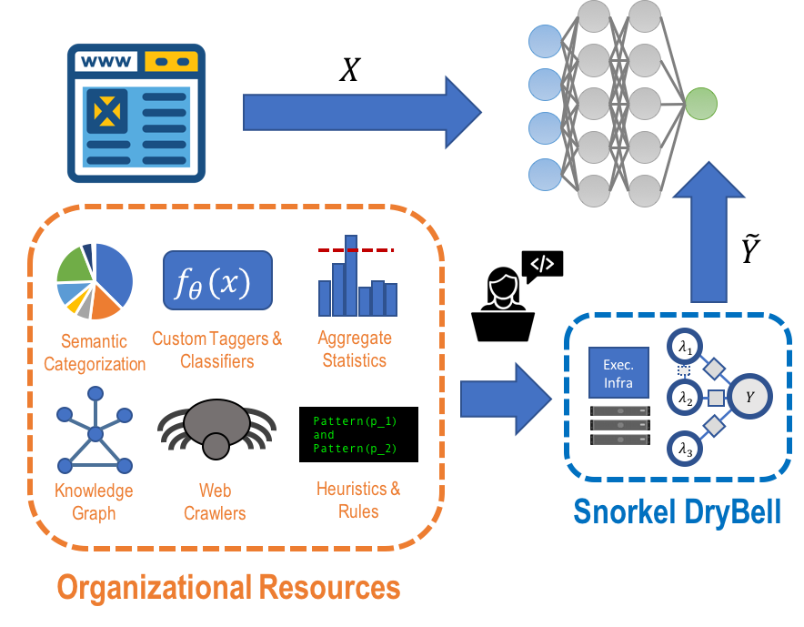
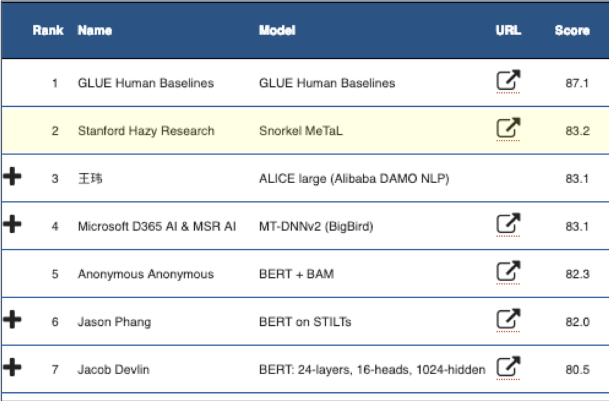
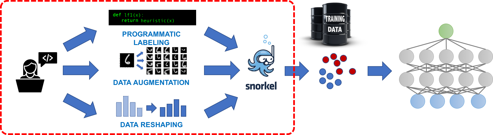
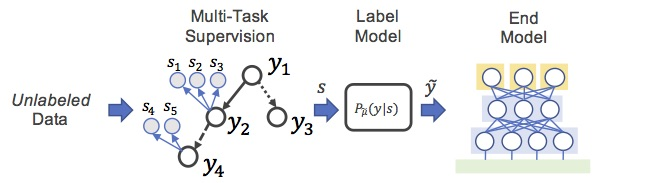

A system for rapidly creating training sets with weak supervision
Snorkel: A System for Fast Training Data Creation
Snorkel is a system for rapidly creating, modeling, and managing training data.
Today's state-of-the-art machine learning models require massive labeled training sets--which usually do not exist for real-world applications. Instead, Snorkel is based around the new data programming paradigm, in which the developer focuses on writing a set of labeling functions, which are just scripts that programmatically label data. The resulting labels are noisy, but Snorkel automatically models this process—learning, essentially, which labeling functions are more accurate than others—and then uses this to train an end model (for example, a deep neural network in TensorFlow).

Surprisingly, by modeling a noisy training set creation process in this way, we can take potentially low-quality labeling functions from the user, and use these to train high-quality end models. We see Snorkel as providing a general framework for many weak supervision techniques, and as defining a new programming model for weakly-supervised machine learning systems.
Users & Sponsors

Snorkel @ Google

[3/14/19] Check out a new blog post and accompanying SIGMOD paper on Snorkel's usage at Google, and some thoughts about applying weak supervision at industrial scale! Big theme: use organizational knowledge resources to quickly and effectively supervise modern ML. We're really excited to keep working with these teams!
Snorkel on GLUE Benchmark

[3/21/19] Using Snorkel MeTaL, our multi-task version of Snorkel, we achieved new state-of-the-art scores on the GLUE Benchmark and four of its component tasks. The primary theme of our success: bringing as much supervision signal to bear as possible. Read our blog post for more detail. The Massive Multi-Task Learning (MMTL) module of Snorkel MeTaL that we used will be released as a part of v0.5 in April.
Snorkel @ NeurIPS 2018
We're excited that Snorkel will be featured in Kunle Olukotun's keynote at NeurIPS this year; to support this, we've assembled some pointers:
- Our vision for Software 2.0 systems, and a new (draft) blog post about what Software 2.0 means for programming.
- Snorkel MeTaL, our multi-task supervision version of Snorkel (AAAI'19).
- The data augmentation framework that can be used in the training loop of end models (NeurIPS'17).
-
Recent uses of Snorkel for:
- handling image data (NeurIPS'17; tutorial)
- using natural language as supervision (ACL'18)
- handling semi-structured data (SIGMOD'18)
- automating training set generation (VLDB'19)
Snorkel @ VLDB 2018
We're excited to be presenting on Snorkel at this year's VLDB conference in Rio De Janeiro, on Tuesday 8/28 in the "Database Techniques for Machine Learning" session. We're also honored that the corresponding paper, Snorkel: Rapid Training Data Creation with Weak Supervision, has been invited to the annual "Best Of VLDB" Special Issue!
- Poster
- Slides
- Check out the Intro Tutorial!
Introducing Snorkel Metal: Weak Supervision for Massively Multi-Task Learning
Complex problems are often composed of multiple tasks, and may have many different types of weak supervision that provide labels for one or more of these tasks. In Snorkel MeTaL, we use a new modeling approach to denoise this massively multi-task weak supervision, and then train an auto-compiled multi-task network with it. Check out:
- The repo (in alpha)
- A AAAI 2019 paper on the core method and supporting theory
- A SIGMOD DEEM 2018 paper on the system architecture
Snorkel ACM Summer School Workshop
 Check out the workshop materials for the upcoming ACM summer school lecture on Snorkel, Weak Supervision & Software 2.0!
Check out the workshop materials for the upcoming ACM summer school lecture on Snorkel, Weak Supervision & Software 2.0!
Snorkel in the Wild
An partial sampling of some public reports of Snorkel / data programming usage:
- Conversational agents at IBM: Bootstrapping Conversational Agents With Weak Supervision (AAAI 2019)
- Web content & event classification at Google: Snorkel DryBell: A Case Study in Deploying Weak Supervision at Industrial Scale (Arxiv 2019)
- Business intelligence at Intel: Osprey: Non-Programmer Weak Supervision of Imbalanced Extraction Problems (TBA)
- Anti-semitic tweet classification w/ Snorkel + transfer learning: A Technique for Building NLP Classifiers Efficiently with Transfer Learning and Weak Supervision (Blog post 2019)
- Clinical text classification: A clinical text classification paradigm using weak supervision and deep representation (BMC MIDM 2019)
- Social media text mining: Deep Text Mining of Instagram Data without Strong Supervision (ICWI 2018)
- Cardiac MRI classification with Stanford Medicine: Weakly supervised classification of rare aortic valve malformations using unlabeled cardiac MRI sequences (BioArxiv 2018)
- Catching cheating at Chegg (Article)
- Medical image triaging at Stanford Radiology: Cross-Modal Data Programming for Medical Images (NeurIPS ML4H 2017)
- GWAS KBC with Stanford Genomics: A Machine-Compiled Database of Genome-Wide Association Studies (NeurIPS ML4H 2016)
Blog Posts and Tutorials
If you're new, get started with the first blog post on data programming, and then check out the Snorkel intro tutorial!
- [3/23/2019] Massive Multi-Task Learning with Snorkel MeTaL: Bringing More Supervision to Bear
- [2/4/2019] Emerging Topics in Multi-Task Learning Systems
- [12/4/2018] Software 2.0 and the Paradigm Shift in Programming ML Systems
- [06/21/2018] Systematically Debugging Training Data for Software 2.0
- [11/30/2017] Weak Supervision: The New Programming Language for Software 2.0
- [09/20/2017] Exploiting Building Blocks of Data to Efficiently Create Training Sets
- [08/10/2017] Learning to Compose Domain-Specific Transformations for Data Augmentation [Repo]
- [07/12/2017] Weak Supervision: The New Programming Paradigm for Machine Learning
- [06/05/2017] Scaling Up Snorkel with Spark [Tutorial]
- [05/08/2017] HoloClean: Weakly Supervised Data Repairing
- [04/17/2017] Structure Learning: Are Your Sources Only Telling You What You Want to Hear? [Tutorial]
- [03/21/2017] Babble Labble: Learning from Natural Language Explanations
- [03/16/2017] Fonduer: Knowledge Base Construction from Richly Formatted Data
- [12/15/2016] Data Programming + TensorFlow Tutorial (notebook version)
- [11/24/2016] SLiMFast: Assessing the Reliability of Data
- [10/24/2016] Socratic Learning: Debugging ML Models
- [9/19/2016] Data Programming: ML with Weak Supervision [Tutorial]
References
Best References:
- Snorkel: Rapid Training Data Creation with Weak Supervision (VLDB 2018)
- Data Programming: Creating Large Training Sets, Quickly (NeurIPS 2016)
- Snorkel and the Software 2.0 vision (KDD 2018) Learning the Structure of Generative Models without Labeled Data (ICML 2017)
- Learning Dependency Structures for Weak Supervision Models (Arxiv 2019)
- Training Complex Models with Multi-Task Weak Supervision (AAAI 2019)
- The Role of Massively Multi-Task and Weak Supervision in Software 2.0 (CIDR 2019)
- Snorkel: Fast Training Set Generation for Information Extraction (SIGMOD DEMO 2017)
- Inferring Generative Model Structure with Static Analysis (NeurIPS 2017)
- Training Classifiers with Natural Language Explanations (ACL 2018)
- Data Programming with DDLite: Putting Humans in a Different Part of the Loop (HILDA @ SIGMOD 2016; note Snorkel was previously DDLite)
- Socratic Learning: Correcting Misspecified Generative Models using Discriminative Models
- Fonduer: Knowledge Base Construction from Richly Formatted Data (SIGMOD 2018)
Further Reading:
- Learning to Compose Domain-Specific Transformations for Data Augmentation (NeurIPS 2017)
- Gaussian Quadrature for Kernel Features (NeurIPS 2017)
Contributors
- Alex Ratner
- Braden Hancock
- Henry Ehrenberg
- Paroma Varma
- Stephen Bach
- Vincent Chen
- Ines Chami
- Clara McCreery
- Jared Dunnmon
- Fred Sala
- Bryan He
- Jason Fries
- Sen Wu
- Theo Rekatsinas
- Chris Ré
- And many other members of Hazy Research
Acknowledgements


Sponsored in part by DARPA as part of the D3M program under contract No. FA8750-17-2-0095 and the SIMPLEX program under contract No. N66001-15-C-4043, and also by the NIH through the Mobilize Center under grant number U54EB020405.
Mailing List
Feel free to subscribe to the Snorkel-dev mailing list for Snorkel-related announcements, notifications, and discussions!